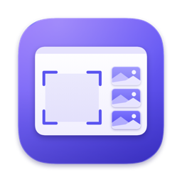

MarginScreenshots that wait in the margin of your screen
Margin is a menu bar app for your Mac. Every capture is saved to ~/Desktop/Screenshots, copied to the clipboard and put on a shelf of thumbnails at the right edge of the screen. A thumbnail stays there until you drag it into another app.
Update Margin
Already have Margin? This opens it and checks for a newer version, or choose Check for Updates… in Margin's menu. Nothing is installed until you click Install in Margin's window. A copy too old to have that menu item needs a fresh download instead.
What it does
- Saved and copied, every time. Each shot is a PNG in your Screenshots folder and on the clipboard. There's no preview to dismiss and no "save?" step.
- A shelf that waits. The thumbnail stays at the edge of the screen until you drag it somewhere, even after you quit or restart. Click it to copy it again.
- Never in its own shots. The shelf, the selection and the fly-in are left out of every capture.
- ⌘V works in terminals. The clipboard holds the image and the saved file, so a terminal pastes the file's path and image apps paste the picture.
- ⇧⌘4
- Drag over an area. Press Space for a single window.
- ⇧⌘3
- The whole screen under the pointer.
- ⇧⌘5
- Record an area, a window or the whole screen. Press it again to stop.
- ⇧⌘2
- The last area again, with no overlay.
- ⇧⌘1
- Tuck the shelf into a small tab, or bring it back.
Install
- Download the zip and open it. You get Margin.app.
- Move Margin.app to your Applications folder, and keep it there: macOS ties Margin's permissions to that copy.
- Open Margin. It isn't notarized by Apple yet, so macOS blocks the first launch once:
- In the "Margin" Not Opened dialog, click Done.
- Open System Settings › Privacy & Security and scroll down to Security.
- Next to "Margin" was blocked, click Open Anyway, then confirm with your password or Touch ID.
- Follow Margin's welcome window: allow Screen Recording, hand over the screenshot shortcuts, and take your first shot.
What it asks for
- Screen Recording
- To capture and record the screen. It asks only when you click Allow… in the welcome window; the switch is in Privacy & Security › Screen & System Audio Recording.
- Your Desktop folder
- macOS asks once, before Margin first saves into
~/Desktop/Screenshots. Choose another folder in Settings if you like. - The screenshot shortcuts
- macOS keeps ⇧⌘3, ⇧⌘4 and ⇧⌘5 for itself until they're turned off. Turn off for me does that when you click it, and Settings can restore them.
- The microphone
- Only if you turn on Record microphone in Settings, for screen recordings; macOS asks then.
- Launch at login
- On by default, so the shortcuts are there after a restart. Turn it off in Settings.
Margin doesn't need Accessibility or Input Monitoring. It has no accounts and no analytics. Once a day it asks GitHub whether there's a newer version, sending nothing about you; turn that off in Settings.